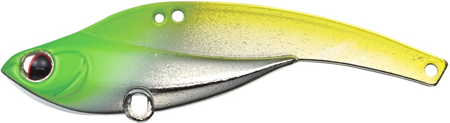
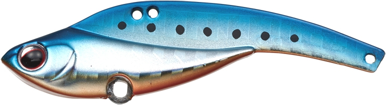
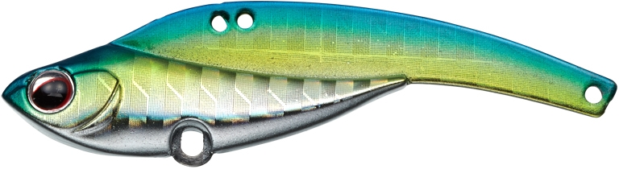
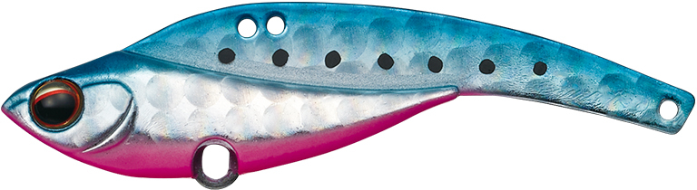

アイアンマービー55
（IronMarvie55）
更新日：2026年11月3日
アイアンマービー55（IronMarvie55）はEVERGREEN（エバーグリーン）の鉄板バイブレーションです。
釣れ頃サイズ×驚異の飛び。
ベイトが小さくて普通のサイズのルアーでは食わない、でもポイントが遠くて小さいルアーでは届かない……そんな状況で釣り勝つための切り札として作られた、全長55mmのスモール鉄板バイブです。小沼正弥さんがプロデュースしました。

画像出典:エバーグリーン公式HP
スペック
- メーカー
- EVERGREEN（エバーグリーン）
- タイプ
- シンキング（鉄板バイブレーション）
- 全長
- 55mm
- 重量
- 13.5g
- フック
- フロント #10・リア #10（トレブルマジック ソルトウォーターバージョン）
- リング・スナップ
- ラインアイ：EGワイドスナップ #1／フックアイ：#1
- カラー
- 全20色以上（UV発光カラーあり）
- ターゲット
- シーバス
- 価格
- 1,300円（税別）
▼今すぐチェック

アイアンマービー55の特徴
小さいのに遠くまで届く、マイクロベイト用の鉄板バイブ
-
低重心とコンパクトヘビー設計で飛ぶ
ウェイト配分とアイの位置を変えてテストを重ね、低重心で最適なバランスに。オリジナルよりややコンパクトヘビーにして、小さいボディでも抜群の飛距離と安定したフォール姿勢を出している。
-
0.8mmの薄いステンレスプレートと極細テール
極薄で強いステンレスプレートでキレのある動き。極細のテールで空気抵抗が減って飛び、鉄板なのに柔らかくナチュラルな波動になる。
-
前後2つのラインアイ
フロントアイはハイピッチでナチュラルなウォブリングでイワシパターンに強い。リアアイは力強くワイドに動き、イナッコやハゼのパターン、濁り潮に効く。
アイアンマービー55の使い方
基本はただ巻きです。ハイピッチでナチュラルなウォブリングが出て、流れの変化で一瞬バランスを崩すことで、自動的に食わせのタイミングを作ってくれます。
フォール中もフックにラインが絡みにくいので、トゥイッチ・ジャーク・ストップ・フォールを組み合わせて、こちらから仕掛けていく攻めの使い方もできます。
アイアンマービー55の得意な状況
シーバスがマイクロベイトや小さいイワシを食べていて、ポイントが遠い時が一番の出番です。
夏から秋の汽水域のデイゲームで、小型バイブをただ巻きする釣りにも向いています。イナッコやハゼを食べている時や濁り潮では、リアアイに付け替えましょう。
小さいベイトを食っている時に、遠くのポイントまで届けてよく釣れる小型鉄板バイブです。
ワンポイント
標準で付いているEGワイドスナップ #1は、ルアーの動きを引き出すためのもの。付け替える時も同じくらい小さいスナップにすると、本来の動きが出ます。
アイアンマービーシリーズの使い分け
| モデル | 全長・重さ | こんな時に |
|---|---|---|
| 40 | 40mm・5.5g | 極小ベイトに合わせる食わせのマイクロ鉄板 |
| 55 | 55mm・13.5g | 小さいベイト×遠いポイント。釣れ頃サイズで飛ばしたい時 |
| オリジナル | 75mm・25g | シリーズの基準になるオリジナルサイズ |
| 109 | 109mm・37g | 大きいベイトや、広い場所の回遊狙い |
※数値は公式ページより。
オススメカラー
アイアンマービー55はUV発光カラーを含む多くのカラーがあります。そのうち4色を紹介します（画像は公式より）。

チャートフラッシュチャートで目立つアピール系。濁り潮や夕マズメに。

マイワシイワシパターンのナチュラル系。澄み潮の日中に。

キビナゴホロ細身のベイトに合わせたホロのフラッシング。

ブルピンイワシブルーの背とピンクのお腹の定番アピールカラー。
画像出典:エバーグリーン公式HP
アイアンマービー55に似ているルアー
-
 タイニー冷音
邪道
詳細はこちら＞
タイニー冷音
邪道
詳細はこちら＞
10gの小型メタルバイブ。テールが絡みにくい。
-
 IP-10 アイアンプレート ハイ&ロー
コアマン
詳細はこちら＞
IP-10 アイアンプレート ハイ&ロー
コアマン
詳細はこちら＞
40mm・10gの小型鉄板バイブ。
-
 クランビット
GOTO9
詳細はこちら＞
クランビット
GOTO9
詳細はこちら＞
9g・15g・25gがあるシーバス用バイブレーション。